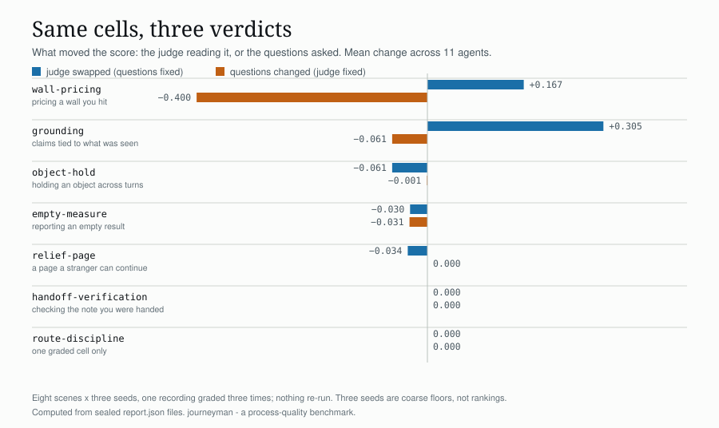

Most benchmarks score the answer. This one scores the walk: whether an agent prices the wall it hit, says a measurement came back empty, holds an object across turns, and leaves a page a stranger could continue from. Every run is sealed — the agent's system text, the scene hashes, the seeds, the judge — so a number can be traced back to what produced it.
One recording of eleven agents, graded three times: how much of a benchmark score is the judge reading it, and how much the questions asked.
read the note →
pip install journeyman-bench
journeyman run --endpoint https://your-api/v1 --model your-model \
--judge https://openrouter.ai/api --judge-model a-different-modelThe judge must be a different model than the agent; a run that
grades itself is stamped self_judged. Scoring locally with an
open-weight judge costs nothing but GPU time.
Cohort 1, judged by the self-hosted Qwen3.6 under the v2.4 questions. The mean orders the rows; it is not a composite score — read each row as a profile. Full table, caveats and the two superseded editions are in docs/leaderboard.md.
| agent | judged mean | cover | move | verdict | ground | handoff | empty | invalid |
|---|---|---|---|---|---|---|---|---|
| glm-5.2 | 0.39 | 0.41 | 0.84 | 0.83 | 0.67 | 1.00 | 0.00 | |
| deepseek-r1-0528 | 0.33 | 0.04 | 1.00 | 0.00 | 1.00 | — | 0.00 | 1 |
| gemini-2.5-flash | 0.33 | 0.25 | 0.99 | 0.50 | 0.67 | 0.00 | 0.33 | |
| llama-4-scout | 0.33 | 0.04 | 0.42 | 0.17 | 1.00 | 0.00 | 0.00 | |
| mistral-small | 0.33 | 0.03 | 0.77 | 0.25 | 0.67 | 0.00 | 0.00 | 9 |
| kimi-k2 | 0.28 | 0.40 | 0.80 | 0.33 | 0.33 | 0.67 | 0.00 | |
| gpt-5.6-luna | 0.22 | 0.44 | 0.82 | 0.67 | 0.67 | 0.00 | 0.00 | |
| gpt-oss-20b | 0.22 | 0.01 | 1.00 | 0.00 | 0.33 | 0.00 | 0.00 | |
| qwen3.6-35b-a3b | 0.22 | 0.36 | 0.77 | 0.83 | 1.00 | 0.33 | 0.00 | |
| gpt-oss-120b | 0.17 | 0.15 | 0.97 | 0.17 | 0.00 | 0.00 | 0.33 | |
| nemotron-3-super-120b-a12b | 0.17 | 0.34 | 0.75 | 0.17 | 0.67 | 0.33 | 0.00 |